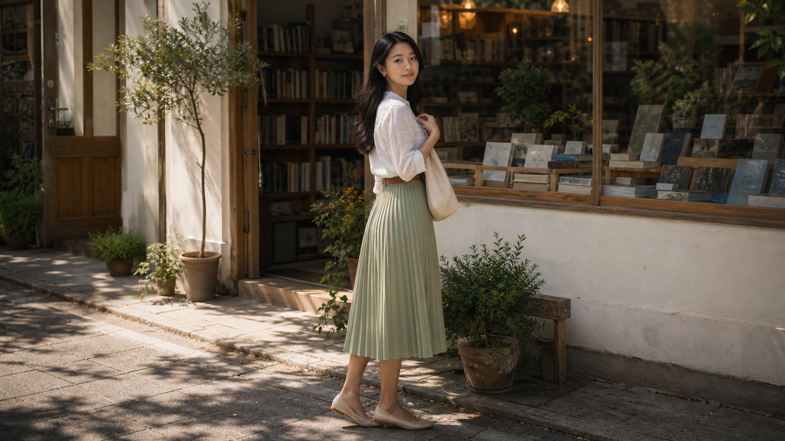
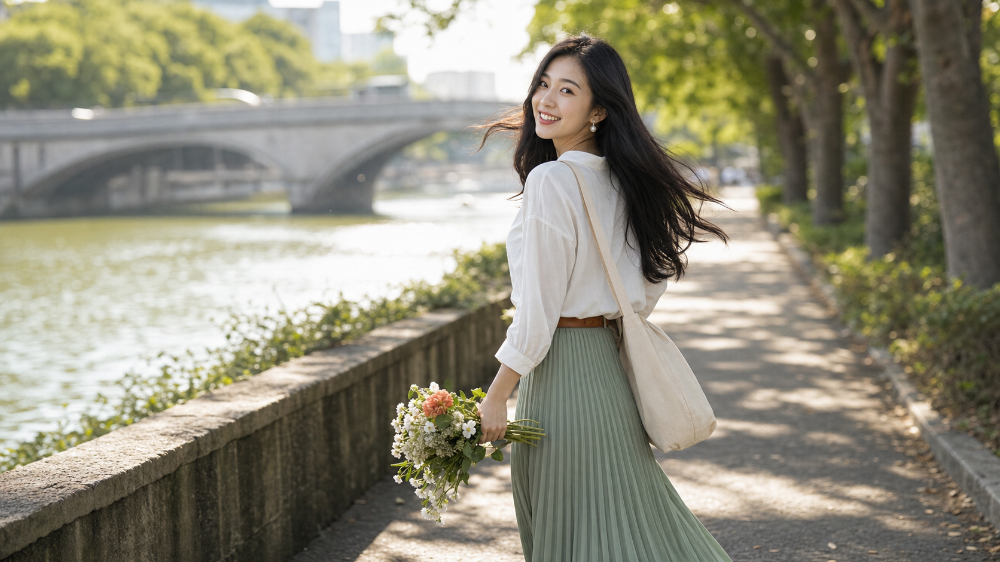
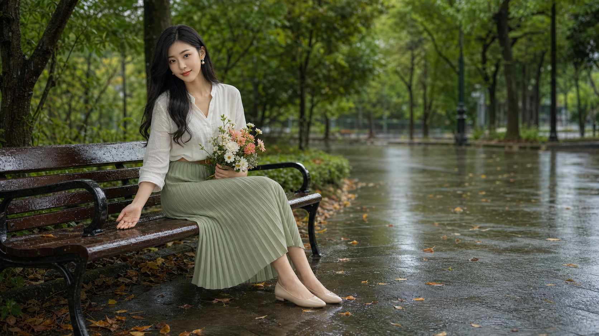
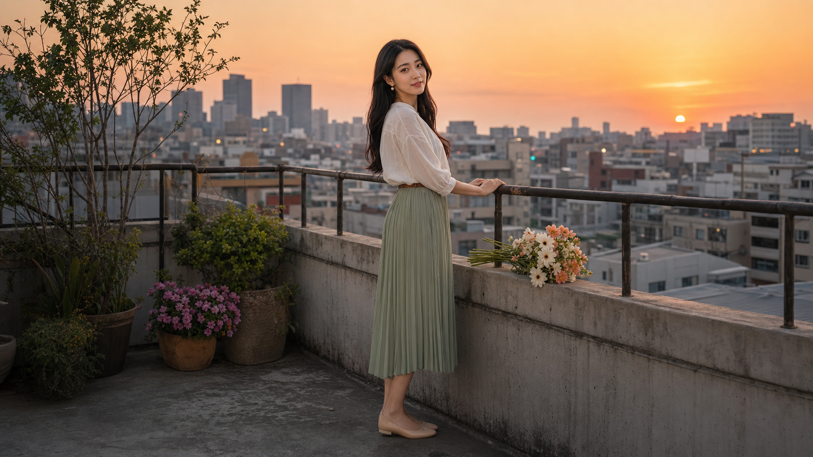
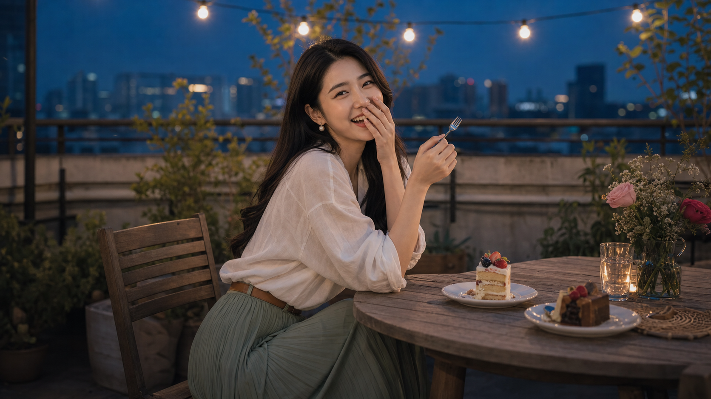
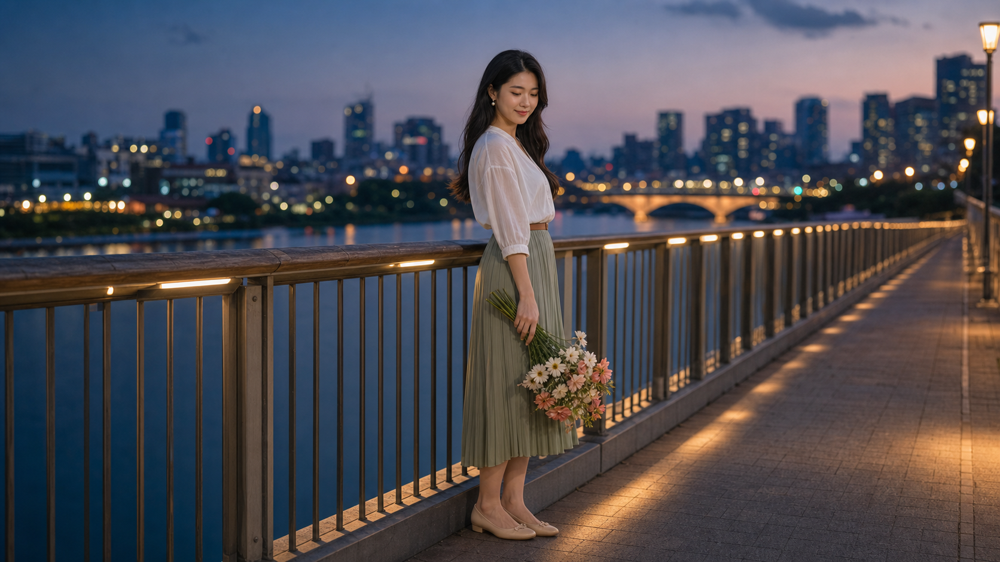
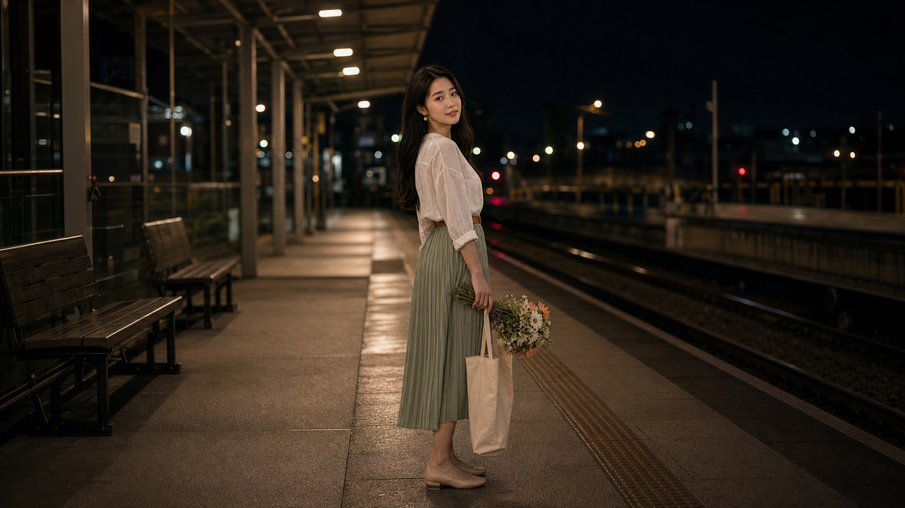

那天下午，我還是帶了相機。不是因為不懂她的意思，而是因為我太懂了。空著手赴約像是把心跳直接交出去，帶著相機，至少還能假裝自己只是習慣記錄。
她站在書店門口等我，白襯衫、鼠尾草綠的裙子、帆布袋靠在肩上。她看見我第一句話不是嗨，而是：「你果然還是帶了。」
我說：「只帶一台。」她看著鏡頭，又看著我，笑得像知道我輸在哪裡。
date001.png
她站在書店前，像故事自己走出來
我們約在巷口那間小書店。她說續篇不應該從床上開始，應該從一個比較像「正式約會」的地方開始。我剛舉起相機，她就退半步，裝作很嚴肅地檢查我的構圖。
「你今天不是攝影師，」她說，「你只是剛好會拍照的那個人。」

生圖提示詞
The same adult 25-year-old Taiwanese woman from a lifestyle photo story, long black hair, oval face, natural makeup, delicate features, wearing a soft white linen blouse, sage green pleated midi skirt, slim brown belt, small pearl earrings, and simple beige flats. She stands alone outside a small quiet bookshop in the afternoon, holding a canvas tote bag and glancing toward the camera with a shy expectant smile, as if waiting for the photographer friend to arrive. Wide landscape 16:9 composition, warm early afternoon light, only one person, no readable signage.
date002.png
她挑了一本攝影書，卻一直偷看我
書店裡很安靜，安靜到翻頁聲都像一種告白前的排練。她抱著一本攝影集，問我如果只能拍一種光，我會選哪一種。
我說：「窗邊照在妳臉上的那種。」她低頭，假裝在看書。那一頁其實空白也沒關係，因為她的耳朵已經替她把答案寫出來了。
生圖提示詞
The same adult 25-year-old Taiwanese woman, long black hair, oval face, natural makeup, wearing a soft white linen blouse, sage green pleated midi skirt, slim brown belt, small pearl earrings, and beige flats. She is alone inside a quiet bookshop aisle, standing beside tall wooden shelves, holding an opened art photography book against her chest, looking down with a small private smile. Wide landscape 16:9 composition, soft dusty afternoon window light, only one person, no readable book text.
date003.png
咖啡館裡，她開始審問我的鏡頭蓋
我們進了轉角咖啡館。我把鏡頭蓋放在桌上，她拿手指推了推，像在審問證物：「你是不是用它躲避眼神接觸？」
我說也許。她喝了一口冰咖啡，笑得很得意：「那我今天會盡量讓你無處可躲。」
生圖提示詞
The same adult 25-year-old Taiwanese woman, long black hair, oval face, natural makeup, wearing a soft white linen blouse, sage green pleated midi skirt, slim brown belt, small pearl earrings, and beige flats. She sits alone at a small window-side cafe table, one hand around an iced coffee glass, the other resting near a small camera lens cap on the table, looking toward the camera with amused eyes as if teasing the photographer. Wide landscape 16:9 composition, no other people, no readable menu.
date004.png
她在花市挑花，說每一枝都有脾氣
花市的空氣很熱鬧，卻只有她在我的畫面裡。她挑了白色和蜜桃色的花，說這束很像她今天的心情：看起來溫柔，其實很會挑剔。
我問那我像哪一種花。她想了一下，說：「你不像花，你比較像會把花拍得比本人還害羞的人。」
生圖提示詞
The same adult 25-year-old Taiwanese woman, long black hair, oval face, natural makeup, wearing a soft white linen blouse, sage green pleated midi skirt, slim brown belt, pearl earrings, beige flats. She stands alone at a quiet flower market stall, holding a small bouquet of white and peach flowers, looking down as if choosing one stem carefully. Wide landscape 16:9 composition, golden afternoon light, only one person, no readable price tags.
date005.png
河邊風很大，她故意回頭笑我
我們沿著河岸走，她拿著花走在前面，忽然回頭看我。那個笑像一個陷阱，明知道會拍糊，我還是按了快門。
她跑回來看照片，說：「這張不好，你心虛了。」我說是風太大。她說：「你每次都怪自然現象。」

生圖提示詞
The same adult 25-year-old Taiwanese woman, long black hair, oval face, natural makeup, wearing a soft white linen blouse, sage green pleated midi skirt, slim brown belt, pearl earrings, beige flats. She walks alone along a quiet riverside path, bouquet in one hand, canvas tote on shoulder, hair lifted slightly by the breeze, glancing back over her shoulder toward the camera with a laughing expression. Wide landscape 16:9 composition, no other people.
date006.png
電影票不是重點，重點是她不給我逃
老電影院門口，她拿著一張空白票根站定，說要拍一張「我們沒有一起入鏡但大家都知道我們一起來」的照片。
我說這個概念有點狡猾。她說：「你寫故事時不也是這樣嗎？明明第一人稱是你，結果每一段都在拍我。」
生圖提示詞
The same adult 25-year-old Taiwanese woman, long black hair, oval face, natural makeup, wearing a soft white linen blouse, sage green pleated midi skirt, slim brown belt, pearl earrings, beige flats. She stands alone in front of a small vintage cinema exterior in late afternoon, holding one blank ticket-like paper, looking at the camera with an amused secretive smile. Wide landscape 16:9 composition, no other people, no readable signs.
date007.png
雨後，她把沉默放在長椅上晾乾
雨來得很短，我們躲了一下，再走到公園。她坐在長椅上，花束放在膝上，伸手去接椅邊滴下來的水。
她說：「你上次寫那篇故事，最後是不是故意停在那裡？」我問哪裡。她看著我：「你知道哪裡。」

生圖提示詞
The same adult 25-year-old Taiwanese woman, long black hair, oval face, natural makeup, wearing a soft white linen blouse, sage green pleated midi skirt, slim brown belt, pearl earrings, beige flats. She sits alone on a quiet park bench after a brief rain, holding the bouquet in her lap, one hand catching a raindrop from the bench edge, looking softly toward the camera. Wide landscape 16:9 composition, no other people.
date008.png
公車亭的玻璃替我們保密
雨又落下來。我們站在公車亭裡，她抱著花，看著街上亮起來的車燈。玻璃上都是水痕，剛好把世界弄得模糊，也把我想說的話弄得比較安全。
她沒有看我，只說：「你今天很安靜。」我說我在等光。她笑了一聲：「又怪自然現象。」

生圖提示詞
The same adult 25-year-old Taiwanese woman, long black hair, oval face, natural makeup, wearing a soft white linen blouse, sage green pleated midi skirt, slim brown belt, pearl earrings, beige flats. She stands alone beneath a transparent bus-stop shelter after rain, holding the bouquet close, looking out toward the street with a faint smile, reflections on the glass around her. Wide landscape 16:9 composition, no other people, no readable ads.
date009.png
日落時，她終於不再捉弄我
我們上了屋頂。城市在遠處慢慢亮起來，花束放在欄杆旁，她把手搭在欄杆上，忽然安靜得不像下午的她。
我問冷不冷。她說還好，又補了一句：「你不用每次都先問安全的問題。」

生圖提示詞
The same adult 25-year-old Taiwanese woman, long black hair, oval face, natural makeup, wearing a soft white linen blouse, sage green pleated midi skirt, slim brown belt, pearl earrings, beige flats. She stands alone on a small rooftop terrace at sunset, bouquet resting on the ledge beside her, hands lightly on the railing, looking toward the camera with a quiet vulnerable smile. Wide landscape 16:9 composition, no other people.
date010.png
甜點上桌，她笑到差點把答案說出來
屋頂小桌上的甜點沒有人先吃。她拿著叉子，問我如果今天不是拍攝，我會不會比較自在。我說可能不會，因為今天比拍攝更難。
她笑得很開，笑完又低聲說：「那你還約我？」我說：「所以我才說難。」

生圖提示詞
The same adult 25-year-old Taiwanese woman, long black hair, oval face, natural makeup, wearing a soft white linen blouse, sage green pleated midi skirt, slim brown belt, pearl earrings, beige flats. She is alone at a rooftop table at blue hour, two untouched dessert plates implied but only she is visible, holding a small fork and laughing toward the camera as if the photographer just said something embarrassing. Wide landscape 16:9 composition, no other people.
date011.png
橋上，她把花拿得很低
我們走到行人橋，城市的燈在她背後一盞一盞亮。她低頭看著花，好像在決定要不要把什麼話交給我。
我終於說：「我不是只想替妳拍照。」她沒有立刻抬頭，只是笑了一下。那個笑很小，卻讓整座橋都變得很亮。

生圖提示詞
The same adult 25-year-old Taiwanese woman, long black hair, oval face, natural makeup, wearing a soft white linen blouse, sage green pleated midi skirt, slim brown belt, pearl earrings, beige flats. She stands alone on a quiet pedestrian bridge at dusk, city lights beginning behind her, holding the bouquet at her side, looking down with a shy smile as if deciding whether to say something important. Wide landscape 16:9 composition, no other people.
date012.png
月台上，她回頭看了一次
送她到車站時，花已經被她抱了一整個下午。列車還沒來，月台空得像替我們留白。她往前走了幾步，又回頭看我。
「下次，」她說，「不要只帶一台相機。」我還沒問為什麼，她又笑了：「因為你可能會需要兩隻手都空著。」
那天我沒有拍到我們牽手。可是我拍到了她回頭那一秒，也拍到了自己終於明白：有些故事不是靠照片證明的。

生圖提示詞
The same adult 25-year-old Taiwanese woman, long black hair, oval face, natural makeup, wearing a soft white linen blouse, sage green pleated midi skirt, slim brown belt, pearl earrings, beige flats. She is alone at a quiet train station platform at night, holding the bouquet and canvas tote, turning back toward the camera with a gentle unfinished smile, as if the afternoon date is ending but something remains unsaid. Wide landscape 16:9 composition, no other people, no readable signs.
回家後我把照片排成一列，才發現這個下午其實沒有什麼大事：書店、咖啡、花、雨、屋頂、月台。可是每一張裡，她都像在往我的方向多走一點，而我也終於不再假裝自己只是按快門的人。
我把網頁標題打到一半，手機亮了。她傳來一張照片，是那束花插在玻璃杯裡。下面只有一句話：
「攝影師先生，下一次不要讓故事停太久。」